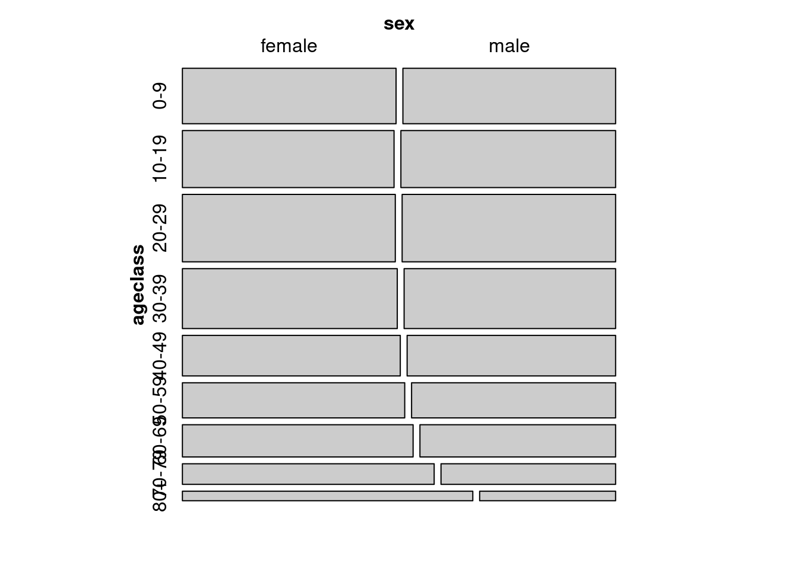
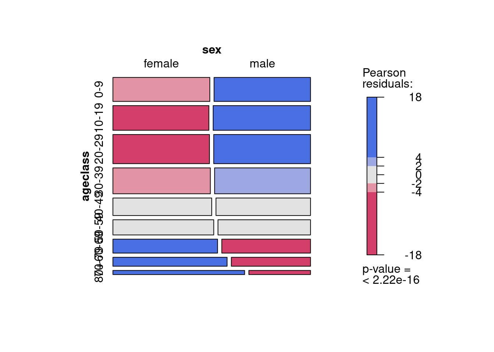
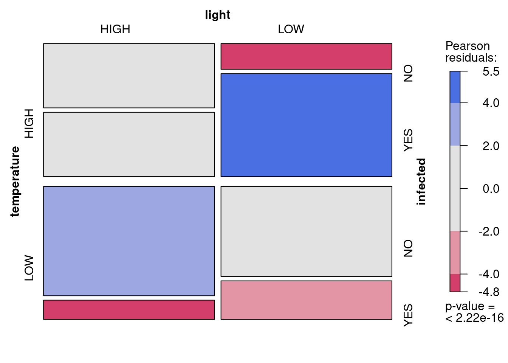
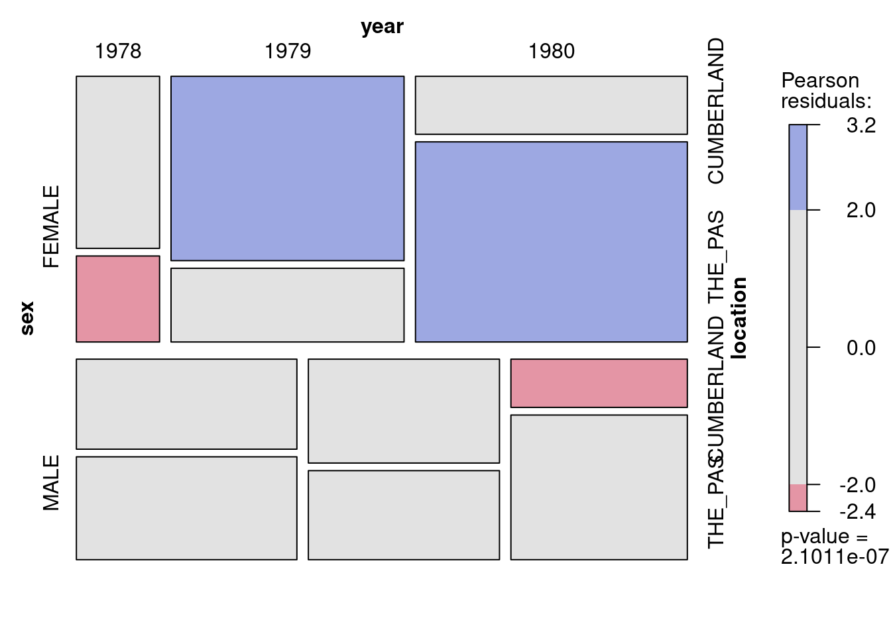

After completing this laboratory exercise, you should be able to:
Create and manipulate data files in R to analyze count data
Use R to test an external hypothesis about a particular population using count data.
Use R to test for independence in two-way tables
Use R to fit Poisson regression and log-linear models to count data
16.1 R packages and data
For this lab you need:
R packages:
vcd
vcdExtra
car
data files
USPopSurvey.csv
loglin.csv
sturgdat.csv
16.2 Organizing the data: 3 forms
Some biological experiments yield count data, e.g., the number of plants infected by a plant pathogen under different exposure regimes, the number of male and female turtles hatched under different incubation temperature treatments (in turtles, sex is temperature dependent!), etc. Usually the statistical issue here is whether the proportion of individuals in different categories (e.g., infected versus uninfected, male versus female, etc.) differs significantly among treatments. To examine this question, we can to set up a data file that lists the number of individuals in each category. There are 3 ways to do this. You should be able to decide which one is appropriate, and how to convert between them with R.
The file USPopSurvey.csv contains the results of a 1980 U.S population survey of a mid-eastern town:
ageclass sex frequency
1 0-9 female 17619
2 10-19 female 17947
3 20-29 female 21344
4 30-39 female 19138
5 40-49 female 13135
6 50-59 female 11617
7 60-69 female 11053
8 70-79 female 7712
9 80+ female 4114
10 0-9 male 17538
11 10-19 male 18207
12 20-29 male 21401
13 30-39 male 18837
14 40-49 male 12568
15 50-59 male 10661
16 60-69 male 9374
17 70-79 male 5348
18 80+ male 1926
Note that there are 18 lines and 3 columns in this file. Each line lists the number of individuals (frequency) of a given sex and age class. There are (sum(USPopSurvey$frequency)) 239539 individuals that were classified into the 18 (2 sexes x 9 age classes) categories. This way of presenting data is the frequency form. It is a compact way to present the data when there are only categorical variables.
When there are continuous variables, the frequency form can’t be utilized (or provides no gain since each observation could possibly have a different values for the continuous variable(s)). Data have therefore to be stored in case form where each observation (individual) represents one line in the data file, and each variable is a column. Conveniently, the vcdExtra 📦 includes the expand.dft() function to convert from the frequency to case form. For example, to create a data frame with 239539 lines and 2 columns (sex and ageclass):
ageclass sex
239534 80+ male
239535 80+ male
239536 80+ male
239537 80+ male
239538 80+ male
239539 80+ male
Finally, these data can also be represented in table form (contingency table) where each variable is represented by a dimension of the n-dimensional table (here, for example, rows could represent each age class, and columns each sex), and the cells of the resulting table contain the frequencies. The table form can be created from the case or frequency form by the xtabs() command with slightly different syntax:
# convert case form to table formxtabs(~ageclass+sex, USPopSurvey.caseform)
(#tab:unnamed-chunk-1)Tools for converting among different forms for categorical data.
From (Row) \ To (column)
Case form
Frequency form
Table form
Case form
xtabs(~ A + B)
table(A, B)
Frequency form
expand.dft(X)
xtabs(count ~ A + B)
Table form
expand.dft(X)
as.data.frame(X)
16.3 Graphs for contingency tables and testing for independence
Contingency tables can be used to test for independence. By this we mean to answer the question: Is the classification of observations according to one variable (say, sex) independent from the classification by another variable (say, ageclass). In other words, is the proportion of males and females independent of age, or does it vary among age classes?
The vcd 📦 includes a mosaic() function useful to graphically display contingency tables:
library(vcd)USTable<-xtabs(frequency~ageclass+sex, data =USPopSurvey)# save the table form as USTable dataframe# Mosaic plot of the contingency tablemosaic(USTable)

Mosaic plot of sex classes per age
Mosaic plots represent the proportion of observations in each combination of categories (here there are 18 categories, 2 sexes x 9 age classes). Categories with a higher proportion of observations are represented by larger rectangles. Visually, one can see that males and females are approximately equal for young age classes, but that the proportion of females increases quite a bit amongst the elders.
The Chi square test can be used to test the null hypothesis that the proportion of males and females does not differ among age classes:
# Test of independencechisq.test(USTable)# runs chi square test of independence of sex and age class
From this we conclude there is ample evidence to reject the null hypothesis that ageclass and sex are independent, which isn’t particularly surprising.
The mosaic plot from the vcd 📦 can be shaded to show the categories that contribute most to the lack of independence:
# Mosaic plot of the contingency table with shadingmosaic(USTable, shade =TRUE)

Mosaic plot of sex by age with colours
The shading of each rectangle is proportional to the extent that observed frequencies deviate from what would be expected if sex and age class were independent. The age classes 40-49 and 50-59 have a sex ratio about equal to the overall sex:ratio for the entire dataset, and appear in grey. There are more young males and old females than expected if sex ratio did not change with age, and these rectangles are coded in blue. On the other hand, there are fewer young females and old males than if sex ratio did not change with age, and these rectangles are red coded. Note that the p-value printed on the right of the graph is for the chi-square test that assumes that observations are independent.
The estimation of p-value associated with the chi square statistic is less than ideal when expected frequencies are small in some of the cells, particularly for 2x2 contingency tables. Two options are then preferred, depending on the number of observations. For large samples, like in this example with more than 200,000 cases(!), a Monte Carlo approach is suggested and can be obtained by adding simulate.p.value=TRUE as an argument to the chisq.test() function
# Monte-carlo estimation of p value (better for small n)chisq.test(USTable, simulate.p.value =TRUE, B =10000)
Pearson's Chi-squared test with simulated p-value (based on 10000
replicates)
data: USTable
X-squared = 1162.6, df = NA, p-value = 9.999e-05
Here, the simulation was done B=10000 times, and the chi square value observed with the data was never exceeded so p is estimated as 1/10001=9.999e-05, which is much larger than the p-value estimated from the theoretical chi square distribution (p< 2.2e-16). This difference in p-value is at least partly an artifact of the number of simulations. To estimate p values as small as 1e-16, at least 1016 simulations must be run. And I am not THAT patient. For small tables with relatively low expected frequencies, Fisher’s exact test can be run to test for independence. This result is unbiased if row and column totals are fixed, but is conservative (i.e. it will incorrectly fail to reject the null more often than expected) if row and/ or column totals are not fixed.
But this test will fail for large samples, like in this example:
# Fisher exact test for contingency tables (small samples and small tables)fisher.test(USTable)# fails here because too many observations
Error in fisher.test(USTable): FEXACT error 40.
Out of workspace.
fisher.test(USTable, simulate.p.value =TRUE, B =10000)
Fisher's Exact Test for Count Data with simulated p-value (based on
10000 replicates)
data: USTable
p-value = 9.999e-05
alternative hypothesis: two.sided
16.4 Log-linear models as an alternative to Chi-square test for contingency tables
By now, hopefully, you have learned to appreciate the flexibility and generality of general linear models and you realize that the t-test is a special, simple, case of a linear model with one categorical independent variable. The analysis of contingency tables by chi square test can similarly be generalized. Indeed, generalized linear models for poisson distributed data can be used when the dependent variable are frequencies (count data) and the independent variables can be categorical only (like for contingency tables, these are also called log- linear models), continuous only (Poisson regression), or a combination of categorical and continuous independent variables (this, too is a Poisson regression, but with added categorical variables, analogous to an ANCOVA sensu largo).
Such models predict the natural log frequency of observations given the independent variables. Like for linear models assuming normality of residuals, one can assess the overall quality of the fit (by AIC for example), and the significance of terms (say by comparing the fit of models including or excluding particular terms). One can even, if desired, obtain estimates of the parameters for each model term, with confidence intervals and p-values for the null hypothesis that the value of the parameter is 0.
The glm() function with the option family=poisson() allows the estimation, by maximum likelihood, of linear models for count data. One “peculiarity” of fitting such models to contingency table data is that generally the only terms of interest are the interactions. Going back to the population survey data in frequency form, with sex and ageclass as independent variables, one can fit a glm model by:
mymodel<-glm(frequency~sex*ageclass, family =poisson(), data =USPopSurvey)summary(mymodel)
Fitting the full model, with the sex:ageclass interaction, allows the proportion of males and females to vary among ageclass levels, and hence to estimate exactly the frequencies for each combination of sex and ageclass (note that the deviance residuals are all 0’s and that the Residual deviance is also approximately zero).
A masochist can use the coefficient table to obtain the predicted values for sex and ageclass categories by summing the appropriate coefficients. The predicted values, like for multiway ANOVA model, are obtained by combining the coefficients. Remembering that the first level of a factor (alphabetically) is used as a reference, here the coefficient for the intercept (9.776733) is the predicted value for the natural log of the number of observations for females in the first alphabetical ageclass (0 to 9). Indeed e9.776733 is approximately equal to 17619, the observed number of females in that age class. For example, for males in the 80+ ageclass, calculate the antilog of the coefficient for the intercept (for female in the youngest age class) plus the coefficient for sexmale (equal to the difference between ln frequency of females and males overall), plus the coefficient for the ageclass 80+ corresponding in the difference in frequency on average between the oldest and reference ageclass, plus the coefficient for the interaction terms sexmale:ageclass80+ (corresponding to the difference in the proportion of male for this ageclass compared to the youngest ageclass), so \(ln(frequency)=9.776733-0.004608-1.454582- 0.754343 = 7.5632\), and the frequency is equal to e7.5632 = 1926
Although there are numerous p values in this output, they are not really helpful. To test whether the effect of sex on observed frequency is the same across ageclass levels, i.e is sex and age are independent, one needs to fit a model where the interaction sex:ageclass is removed, and see how badly this affects the fit. The Anova() function of the car package provides a handy shortcut:
Anova(mymodel, type =3, test ="LR")
Analysis of Deviance Table (Type III tests)
Response: frequency
LR Chisq Df Pr(>Chisq)
sex 0.2 1 0.6657
ageclass 21074.6 8 <2e-16 ***
sex:ageclass 1182.2 8 <2e-16 ***
---
Signif. codes: 0 '***' 0.001 '**' 0.01 '*' 0.05 '.' 0.1 ' ' 1
The use of type=3 and test=“LR” ensures that the test performed to compare the full and reduced models is the Likelihood Ratio Chi- Square using the Residual deviance, and that it is a partial test, not a sequential one.
According to these tests, there is no main effect of sex (p=0.667) but there is a main effect of ageclass and a significant sex:ageclass interaction. The significant interaction means that the effect of sex on frequency varies with ageclass, or that the sex ratio varies with age. The main effect of ageclass means that the frequency of individuals varies with age (i.e some ageclass are more populous than others), The absence of a main effect of sex suggests that there are approximately the same frequency of males and females in this sample (although, since there is an interaction, you have to be careful in making this assertion. It is “true” overall, but appears incorrect for individual age categories).
16.5 Testing an external hypothesis
The above test of independence is that of an internal hypothesis because the proportions used to calculate the expected frequencies assuming independence of sex and ageclass come from the data (i.e. the overall proportion of males in females in the entire dataset, and the proportions of individuals in each ageclass, males and females combined.
To test the (external) null hypothesis that the sex ratio is 1:1 for the youngest individuals (ageclass 0-9), one has to compute the 2 X 2 table of observed and expected frequencies. The expected frequencies are obtained simply by summing male and female frequencies and dividing by two.
R program to create and analyze a 2x2 table to test an external hypothesis
### Produce a table of obs vs exp for 0-9 age classPopn0.9<-rbind(c(17578, 17578), c(17619, 17538))### Run X2 test on above tablechisq.test(Popn0.9, correct =F)### X2 without Yateschisq.test(Popn0.9)### X2 with Yates
Exercise
Test the null hypothesis that the proportion of male and female at birth is equal. What is your conclusion? Do you think the data is appropriate to test this hypothesis?
Pearson's Chi-squared test with Yates' continuity correction
data: Popn0.9
X-squared = 0.088758, df = 1, p-value = 0.7658
In the past, for 2 X 2 tables Yates’s correction was frequently employed (first test above, but it has since been shown to be overly conservative and is no longer recommended (although it doesn’t affect the results in this particular instance). Better is a Fisher’s exact test if the total number of cases is <200 (which is not the case here), or a randomization. Given that we cannot use a Fisher’s exact test here we are using a Yate’s correction.
These data are not particularly good for testing the null hypothesis that the sex ratio at birth is 1:1 because the first age category is too coarse. It is entirely possible that at birth there is an unequal sex-ratio, but there is compensatory age-specific mortality (e.g. more males at birth, but reduced survivorship among males in the first 9 years of life relative to females). In this case, the sex ratio at birth is NOT 1:1, but we still accept the null hypothesis based on age class 0-9.
16.6 Poisson regression to analyze multi-way tables
loglin<-read.csv("data/loglin.csv")# Convert from frequency form to table form for mosaic plotloglinTable<-xtabs(frequency~temperature+light+infected, data =loglin)# Create mosaic plot to look at datamosaic(loglinTable, shade =TRUE)

Proportion de plantes infectées en fonction de la température er la lumière
The principle of testing for independence through interactions can be extended to multi-way tables, that is, tables in which more than two criteria are used to classify observations. For example, suppose that we wanted to test the effect of temperature (two levels: high and low) and light (two levels: high irradiance and low irradiance) on the number of plants infected by a plant pathogen (two levels: infected and non-infected). In this case we would need a three-way table with three criteria (infection status, temperature, and light).
Fitting log linear models to frequency data involves testing of different models by comparing them with the full (saturated) model. A series of simplified models is produced, each model missing one of the interactions of interest, and the fit of each simplified model is compared to that of the full model. If the fit does not change much, then the term eliminated does not have much influence on the frequencies, whereas if the resulting model provides a significantly worse fit, then the term is important. As with two-way tables, the terms of interest are the interactions, not the main effects, if what we are testing for is independence of different factors.
The file loglin.csv contains the frequencies ( frequency ) of infected and non-infected plants ( infected ) at low and high temperature ( temperature) and low and high light ( light). To graph the data and determine if infected status depends on light and temperature, one can construct a mosaic plot and a loglinear model.
# Convert from frequency form to table form for mosaic plotloglinTable<-xtabs(frequency~temperature+light+infected, data =loglin)# Create mosaic plot to look at datalibrary(vcd)mosaic(loglinTable, shade =TRUE)
The symmetrical experimental design with the same number of observations made at the two levels of light and of temperature is apparent in the above plot in the overall equal area occupied by the observations in each of the four quadrants. What is of interest, the infected status, appears to vary among the quadrants (i.e. levels of light and temperature). For example, the red rectangles in the lower left and upper right quadrants indicates that there were fewer infected plants at high light and low temperature (bottom left), and fewer uninfected plants at low light and high temperature than if the infected level was not affected by light and temperature. The p-value at the bottom of the color scale represents a test of independence equivalent to testing the full model against a reduced model including only the main effect of temperature, light, and infected status on the (ln) number of observations.
# Fit full modelfull.model<-glm(frequency~temperature*light*infected, family =poisson(), data =loglin)# Test partial effect of terms in full modelAnova(full.model, type =3, test ="LR")
The probabilities associated with each term in the full model are here calculated by comparing the fit of the full model to that of a model with this particular term removed. As is typical in log-linear model analyses, many of the tests here are not interesting. If the biological question is about how infected status varies with other conditions, then the only informative terms are the interaction terms involving infected status.
There are therefore only 3 terms of interest:
temperature:infected significant interaction implies that infection status is not independent of temperature. Indeed the mosaic plot shows that the proportion of infected cases is higher at high temperature.
light:infected significant interaction implies that infection status is not independent of light. The mosaic plot also indicates that the proportion of infected plants is larger at low light levels.
temperature:light:infected 3 way-interaction is not significant. This implies that the previous 2 effects do not vary between levels of the third variable. So there is no evidence that the effect of light on infection status varies at the two temperatures, or that the effect of temperature on infection status varies between the two light levels. We should therefore drop this term and refit before evaluating the 2-way interactions (small increase in power).
16.7 Exercice
We will now work with the sturgdat data set to test the hypothesis that number of fish caught is independent of location, year, and gender. Before the analysis, the data will have to be reshaped to be in suitable format for fitting a log-linear model.
Exercise
Open sturgdat.csv , then use the table() function to summarize the data according to number of individuals by sex , location , and year . Save this object as sturgdat.table . Make a mosaic plot of the data.
sturgdat<-read.csv("data/sturgdat.csv")# Reorganize data from case form to table formsturgdat.table<-with(sturgdat, table(sex, year, location))# display the tablesturgdat.table
, , location = CUMBERLAND
year
sex 1978 1979 1980
FEMALE 10 30 11
MALE 14 14 6
, , location = THE_PAS
year
sex 1978 1979 1980
FEMALE 5 12 38
MALE 16 12 18
# Create data frame while converting from table form to frequency formsturgdat.freq<-as.data.frame(sturgdat.table)# display data framesturgdat.freq
sex year location Freq
1 FEMALE 1978 CUMBERLAND 10
2 MALE 1978 CUMBERLAND 14
3 FEMALE 1979 CUMBERLAND 30
4 MALE 1979 CUMBERLAND 14
5 FEMALE 1980 CUMBERLAND 11
6 MALE 1980 CUMBERLAND 6
7 FEMALE 1978 THE_PAS 5
8 MALE 1978 THE_PAS 16
9 FEMALE 1979 THE_PAS 12
10 MALE 1979 THE_PAS 12
11 FEMALE 1980 THE_PAS 38
12 MALE 1980 THE_PAS 18
# Look at the data as mosaic plot# mosaic using the table created abovemosaic(sturgdat.table, shade =TRUE)

Frequency of female and male sturgeon as a function of year and location
{.callout-caution} # Exercise Using the frequency form of the table, fit the full log-linear model just as we did with the loglin data set and produce the anova table with chi square statistics for the terms in the model. Is the 3-way interaction significant ( location:year:sex )? Does sex ratio change between locations or among years? ::
# Fit full modelfull.model<-glm(Freq~sex*year*location, data =sturgdat.freq, family ="poisson")summary(full.model)
Call:
glm(formula = Freq ~ sex * year * location, family = "poisson",
data = sturgdat.freq)
Coefficients:
Estimate Std. Error z value
(Intercept) 2.30259 0.31623 7.281
sexMALE 0.33647 0.41404 0.813
year1979 1.09861 0.36515 3.009
year1980 0.09531 0.43693 0.218
locationTHE_PAS -0.69315 0.54772 -1.266
sexMALE :year1979 -1.09861 0.52554 -2.090
sexMALE :year1980 -0.94261 0.65498 -1.439
sexMALE :locationTHE_PAS 0.82668 0.65873 1.255
year1979:locationTHE_PAS -0.22314 0.64550 -0.346
year1980:locationTHE_PAS 1.93284 0.64593 2.992
sexMALE :year1979:locationTHE_PAS -0.06454 0.83986 -0.077
sexMALE :year1980:locationTHE_PAS -0.96776 0.87942 -1.100
Pr(>|z|)
(Intercept) 3.3e-13 ***
sexMALE 0.41641
year1979 0.00262 **
year1980 0.82732
locationTHE_PAS 0.20569
sexMALE :year1979 0.03658 *
sexMALE :year1980 0.15011
sexMALE :locationTHE_PAS 0.20950
year1979:locationTHE_PAS 0.72957
year1980:locationTHE_PAS 0.00277 **
sexMALE :year1979:locationTHE_PAS 0.93875
sexMALE :year1980:locationTHE_PAS 0.27114
---
Signif. codes: 0 '***' 0.001 '**' 0.01 '*' 0.05 '.' 0.1 ' ' 1
(Dispersion parameter for poisson family taken to be 1)
Null deviance: 5.7176e+01 on 11 degrees of freedom
Residual deviance: -2.6645e-15 on 0 degrees of freedom
AIC: 77.28
Number of Fisher Scoring iterations: 3
This is a three-way table, with three factors: sex, location and year . Thus, the “staturated” or “full” loglinear model includes 7 terms: the three main effects ( sex, location and year ), the three 2-way interactions ( sex:year, sex:location and year: location ) and the one 3-way interaction ( sex:year:location ). The null deviance is 57.17574, the residual deviance of the full model is, not surprisingly, 0. The deviance explained by the three-way interaction, 1.66773 (which is, in fact, a chi square statistic with two degrees of freedom), is not significant, and we are therefore justified in fitting the model without this term.
What does this mean? It means that, if there are any 2-way interactions, they do not depend on the level of the third variable. For example, if indeed the sex ratio of sturgeon varies among years (a sex:year interaction), that it varies in the same manner at the two locations. This in turn means that in testing for two-way interactions, we are (statistically) justified in pooling (summing) over the levels of the third variable. This is analog to what can be done in multiway ANOVA when high order interactions are not significant. For example, in testing for a sex:location effect, we can pool over year , to produce a 2 X 2 table whose cell counts are the total number of sturgeon of a given sex at a given location captured over the three years 1978-1980. By increasing cell counts, we increase statistical power, which is desirable.
If we adjust the model without the 3-way interaction, we get:
Solution
o2int.model<-glm(Freq~sex+year+location+sex:year+sex:location+year:location, data =sturgdat.freq, family ="poisson")Anova(o2int.model, type =3)
We can see that the sex:location interaction does not explain a significant portion of the deviance, whereas the two others do. Sex ratio does not vary among locations, but it does among years. The year:location is also significant (see below for its meaning).
Should you try to simplify the model further? Real statisticians are divided on this question. All agree that keeping insignificant terms in the model may cost some power. On the other hand, removing non significant interactions can lead to difficulty interpreting answers when observations are not well balanced (i.e. there is colinearity among model terms).
Refit the model, this time excluding the sex:location interaction.
Solution
o2int.model2<-glm(Freq~sex+year+location+sex:year+year:location, data =sturgdat.freq, family ="poisson")Anova(o2int.model2, type =3)
Now the remaining two interactions are significant. It looks as though this is the “best” model. On the basis of the above analysis, the simplest model is:
\[ln[f_{(ijk)} ] = location + sex + year + sex:year + location:year\]
How are these effects interpreted biologically? Remember, as in tests of independence, we are not interested in main effects, only the interactions. For example, the main effect location tells us that the total number of sturgeon caught (pooled over both sexes and all years 1978-1980) varied between the two locations. This is not surprising and uninteresting given that we have no information on the sampling effort. However, the sex:year interaction tells us that over the 3 year period, the sex-ratio of the harvest changed, and it changed in more or less the same fashion in the two locations, which is a rather interesting result. The location:year effect tells us that the total number of sturgeon harvested not only changed over the years, but that this change varied between locations. This could be caused by a difeerent fishing effort at one station over the years, or to a negative impact at one station only on one year. Whatever the cause, it affected males and females similarly since the 3 way interaction is not significant.